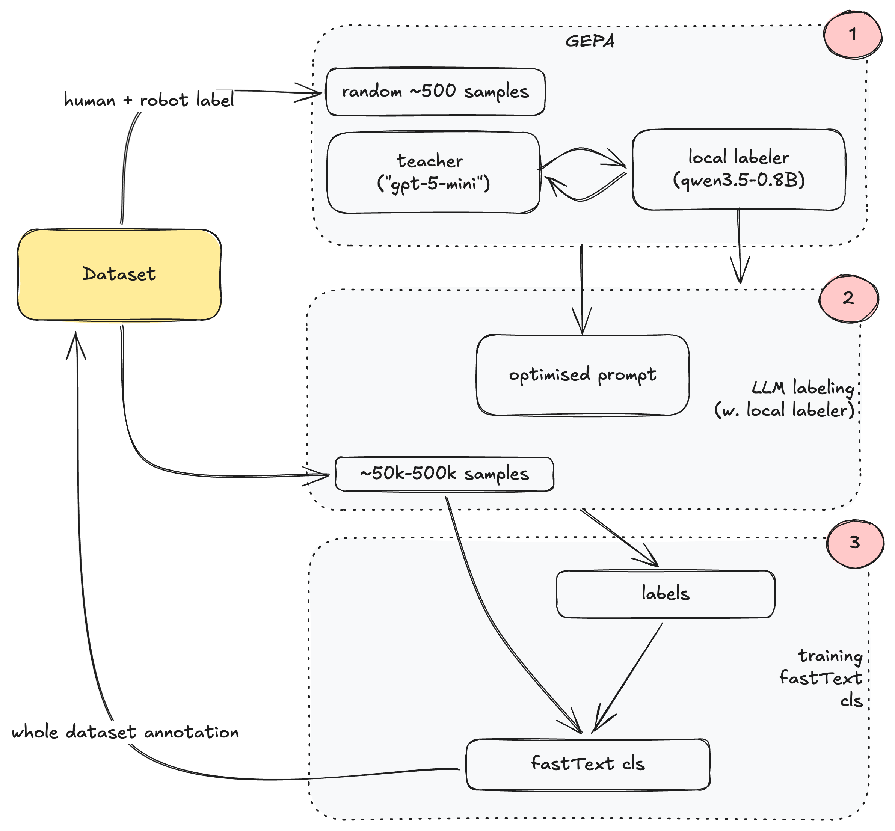

BottleCap GPT-2 speedrun · data-prep arm
Curate the existing FineWeb tokens into an easy→hard curriculum. A cheap, distilled scorer labels all 5B tokens; an annealed schedule decides when the model meets each document — never whether. The training mix can’t drift off the validation distribution, because the schedule ends on the full data.
The validation set is drawn from the same distribution as the training data. So the usual "clean the dataset" instinct backfires: if you hard-filter the "noise," you also delete patterns the test set still contains, and the model drifts away from the target — slower convergence, not faster.
Two consequences shape everything below. (1) Filtering is demoted to a cautious, possibly-negative ablation; ordering leads. (2) We need a per-document score that means "how learnable is this right now" — closer to difficulty than to "educational value" — cheap enough to run over all 5B tokens.
A frontier model is far too slow to score 5B tokens directly. So we distill its judgment down three hops — from an expensive teacher, to a small local labeler, to a classifier that runs over the whole corpus for almost nothing.
A strong teacher (gpt-5-mini) gives reference labels + reflective feedback on ~500 samples. DSPy GEPA evolves the prompt of a small Qwen3.5-0.8B labeler to match it.
The tuned 0.8B labeler annotates a representative sample of ~50k–500k docs. Cheap enough to scale, accurate enough to train on.
Train a fastText classifier on (text → label), then run it over all 5B tokens. Same move as Ultra-FineWeb.

The scorer emits exactly two things at doc level (line-level scoring is outside the compute budget for a full run).
"How coherent / well-formed / predictable is this passage?" Drives curriculum ordering and soft reweighting. This is the difficulty axis — the whole point — not an "educational value" score.
Genuine garbage only: encoding noise, boilerplate/nav, truncation, non-language, link farms. Used to down-weight (not delete) — or maybe replaced by a rule-based pass. Hard-dropping risks drift (see §01).
Think of training as a clock from start to finish. Near the start, sample mostly easy (high-learnability) docs. Over time, relax the preference. By the finish, favour nothing — sample the full FineWeb mix as-is. One knob, ALPHA, sets how aggressive the start is.
Wλ(z) = ℓ α(1−λ) — easy-first when λ small, flat (uniform) as λ → 1
Why it’s safe: the schedule ends flat, so the last shards are the untouched full distribution. The model still meets every hard/rare document — the curriculum only changes the order of arrival.
import numpy as np ALPHA = 1.00 # 1 the only knob: 0 = no curriculum, larger = stronger easy-first # docs + their learnability score in [0,10] docs, ell_raw = load_labeled_docs("data/fineweb10B/fineweb_train_*.bin") lengths = np.array([len(d) for d in docs]) ell = (ell_raw + 0.5) / 10.5 # 2 normalize into (0,1] so ell**x stays well-behaved for s in range(S): # S output shards, start -> finish lam = s / (S - 1) # 3 training progress: 0 -> 1 w = ell ** (ALPHA * (1 - lam)) # 4 W_λ: easy-first when λ small, flat as λ -> 1 p = w / w.sum() picks, filled = [], 0 while filled < TOK: # 5 resample TOK tokens for this shard (with replacement) i = np.random.choice(len(docs), p=p) picks.append(docs[i]) filled += lengths[i] write_bin(f"data/curriculum/curr_train_{s:06d}.bin", np.concatenate(picks))
ALPHA = 0 reproduces the baseline mix exactly — the clean control. Larger values bias harder toward easy docs at the start.+0.5 / 10.5 shift keeps the lowest score strictly positive so ℓ**x never collapses to 0.ALPHA down to 0.Every data idea here is a pure .bin → .bin transform. Two short pieces of the real loader explain the format you write into, and why the filename order you choose becomes the training order — with no shuffle anywhere.
def _load_data_shard(filename): with open(filename, "rb") as f: header = np.frombuffer(f.read(256 * 4), dtype=np.int32) # 1 256×int32 header assert header[0] == 20240520, "magic number mismatch" # 2 magic assert header[1] == 1, "unsupported version" ntok = header[2] # claimed token count tokens = np.frombuffer(f.read(), dtype=np.uint16) # 3 flat uint16 token river assert len(tokens) == ntok return tokens
20240520, version 1. Get either wrong and the loader exits immediately — a useful tripwire.uint16). Documents run end-to-end, separated by the EOT token 50256. To reorder, split on EOT → resample docs → re-concatenate. Verify the separator before trusting boundaries.self.files = sorted(glob.glob(filename_pattern)) # 1 shards visited in filename order def next_batch(self): buf = self.tokens[self.current_position : self.current_position + B*T + 1] x = buf[:-1].view(B, T) # inputs y = buf[1:].view(B, T) # targets (next-token) self.current_position += B * T * self.num_processes # 2 slide a contiguous window if self.current_position + (B*T*self.num_processes + 1) > len(self.tokens): self.advance() # 3 jump to next shard when the tail can't fill a window return x.cuda(), y.cuda()
sorted() filename order, and within a shard the window just slides front-to-back. So file order = training order. Naming your shards curr_train_000000.bin … _0000NN.bin is literally what makes the model see easy data first.B·T, or accept a small, consistent tail loss.This is the baseline command. The data-prep arm changes only --input_bin — point it at the curriculum shards and touch nothing else — so any speedup is attributable to the data, not the optimizer.
torchrun --standalone --nproc_per_node=1 train_gpt2.py \ --input_bin "data/fineweb10B/fineweb_train_*.bin" \ # 1 swap in: data/curriculum/curr_train_*.bin --model d12 \ # 124M GPT-2 --batch_size 16 \ # 2 16 × 1024 × 32 grad-accum --sequence_length 1024 \ # = 524,288 tokens / step --grad_accumulation_steps 32 \ --num_iterations 4768 \ # 3 × 4768 ≈ 2.5B tokens (budget allows 5B) --learning_rate 0.0018 \ --warmup_iters 256 \ --warmdown_iters 1024 \ --weight_decay 0.1 \ --val_loss_every 128
The val set is in-distribution. Deleting "noise" deletes patterns the test set also contains → the mix drifts off-target. Lead with ordering; treat junk-dropping as a cautious, documented ablation that down-weights rather than deletes.
There is no shuffle. The loader reads shards in sorted() filename order and slides front-to-back. Mis-name a shard and the curriculum silently breaks with no error. Zero-pad indices: _000000.bin, not _0.bin.
Docs are concatenated and separated by the EOT token. If you reshuffle without splitting on it you’ll fuse or truncate documents and corrupt boundaries. Doc-level only — line-level scoring is out of budget. Verify the separator value first.
If the last shards aren’t the full untouched mix (λ→1, exponent→0), the model never sees the hard tail and you have drifted off-distribution. The anneal-to-uniform is the safety property, not a detail.
Competition rule: you may modify existing FineWeb, never add data. The curriculum resamples what’s already there — with replacement is fine, importing isn’t.
If an arm changes the learning rate (e.g. hard-first + a bigger early LR), you must re-tune the baseline LR too and report it as a separate 2-factor study — keep the data-only headline uncontaminated.
next_batch skips a shard’s leftover tokens once they can’t fill a full B·T window. With resampled shards this can quietly under-sample whatever lands at the tail — size shards to a multiple of B·T.
Per-microstep loss is already divided by grad_accumulation_steps before it’s accumulated for logging (recently fixed). Don’t double-divide when comparing curriculum vs. baseline logs.
Aggressive autotune can hit shared-memory / "insufficient SMs" errors on some cards. If a run won’t start, disable torch.compile — slightly slower, but unblocks the comparison.
The metric is cross-entropy on a fixed 1,048,576-token val set. Compare arms by wall-clock (or step) to first cross 3.3821, not final loss — this is a speedrun, not a min-loss race.